Reel
01Bande démo · Réalisation16:9
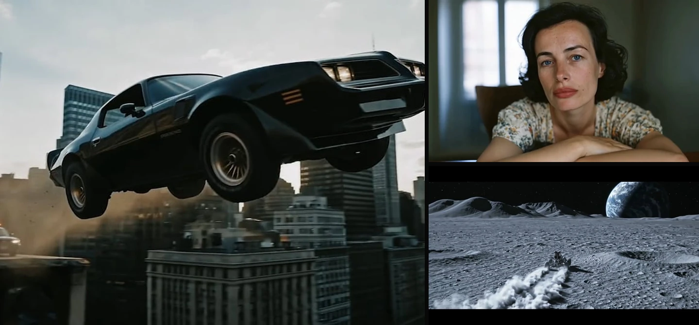
Lire le filmUne minute de réalisation, de direction artistique et de création en IA générative : publicité, fiction et recherche visuelle.
Note de réalisation4 films · 16:9
01Bande démo · Réalisation16:9

Lire le filmUne minute de réalisation, de direction artistique et de création en IA générative : publicité, fiction et recherche visuelle.
Note de réalisation02Fiction · IA générative16:9
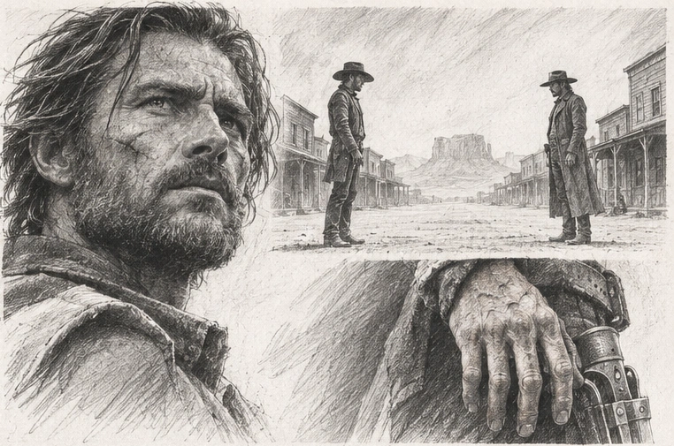
Un face-à-face dans un décor de western, où les regards, la tension et les mouvements du combat construisent la scène.
Note de réalisation03Clip · Création personnelle16:9
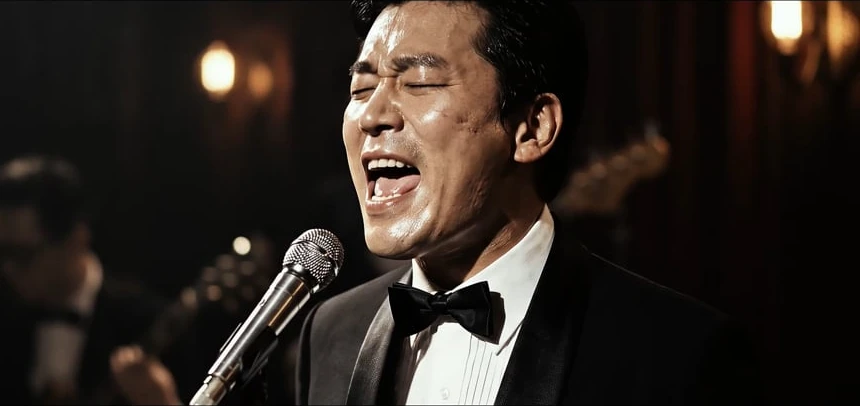
Lire le film
Un film musical qui interroge, avec ironie, le rapport entre intelligence artificielle, authenticité et émotion humaine.
Note de réalisation04Spec film · Publicité · IA générative16:9
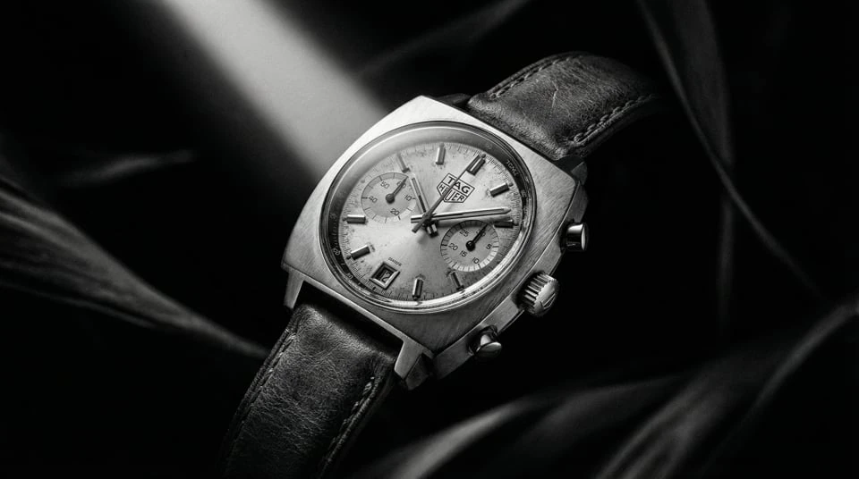
Lire le film
Un film publicitaire indépendant autour de l’horlogerie, qui met en valeur la montre, ses matières et sa lumière.
Note de réalisation8 films · 16:9
05Création · IA générative16:9
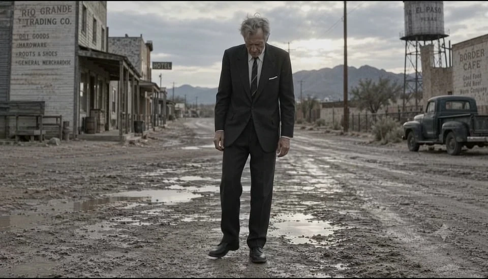
Lire le filmUn même mouvement traverse différents personnages, époques et univers. Une recherche sur la continuité du geste et le montage.
Note de réalisation06Bande-annonce · Fiction16:9
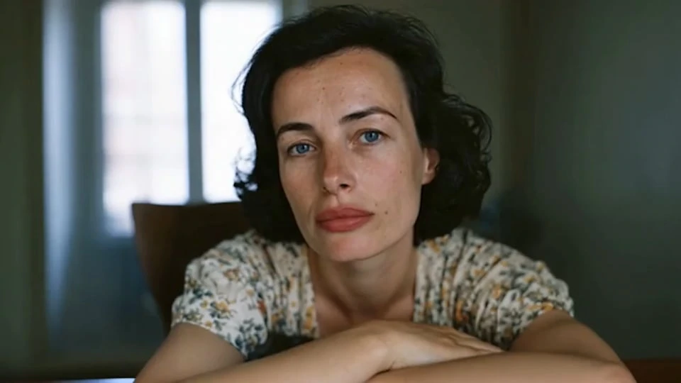
Lire le filmUne bande-annonce qui s’appuie sur les visages, les regards et les atmosphères pour installer un univers de fiction.
Note de réalisation07Fiction · IA générative16:9
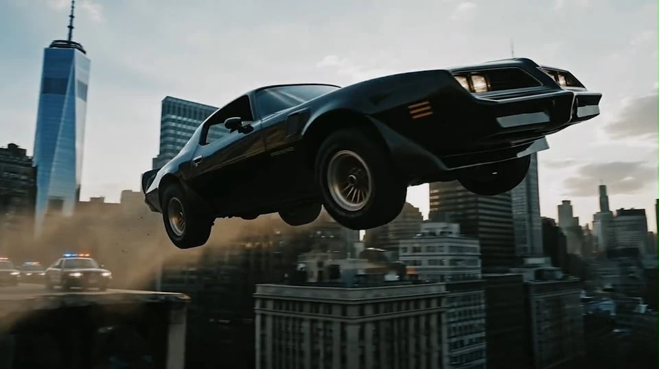
Lire le filmUne séquence d’action urbaine, avec une voiture propulsée au-dessus de la ville. Un travail sur le mouvement, l’espace et le cadrage.
Note de réalisation08Film publicitaire · Boisson · IA générative16:9
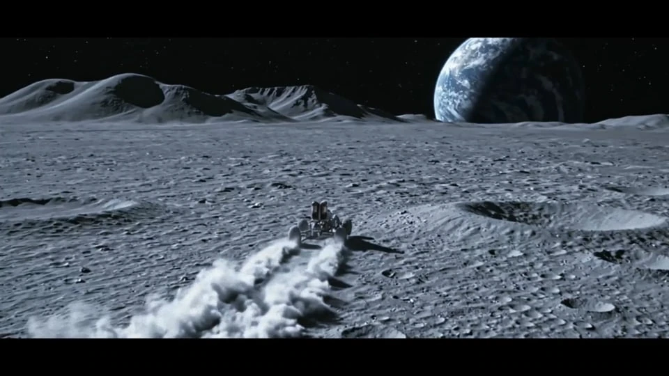
Lire le filmUne boisson transposée dans un univers lunaire : un rover, un astronaute et une canette au cœur de la mise en scène.
Note de réalisation09Film publicitaire · IA générative16:9
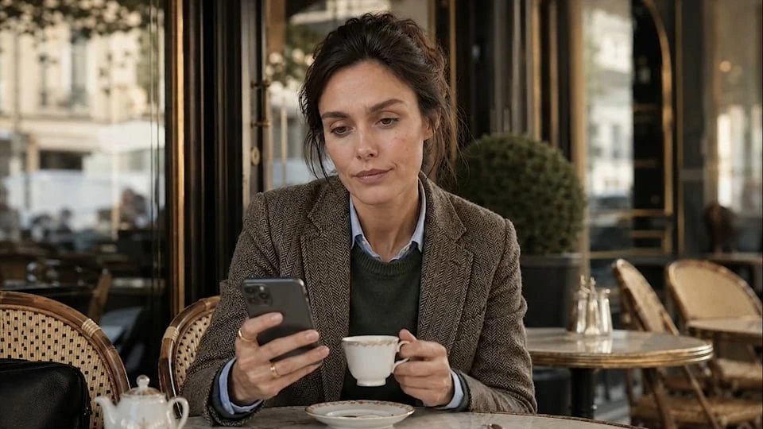
Lire le filmUn film publicitaire qui inscrit ses personnages dans un cadre du quotidien, avec une attention portée à la justesse des attitudes et du décor.
Note de réalisation10Sketch · Groland · Canal+16:9

Un sketch d’environ trois minutes entièrement réalisé en IA générative pour Groland, autour d’un procès et de ses personnages.
Note de réalisation11Sketch · Groland · Canal+16:9
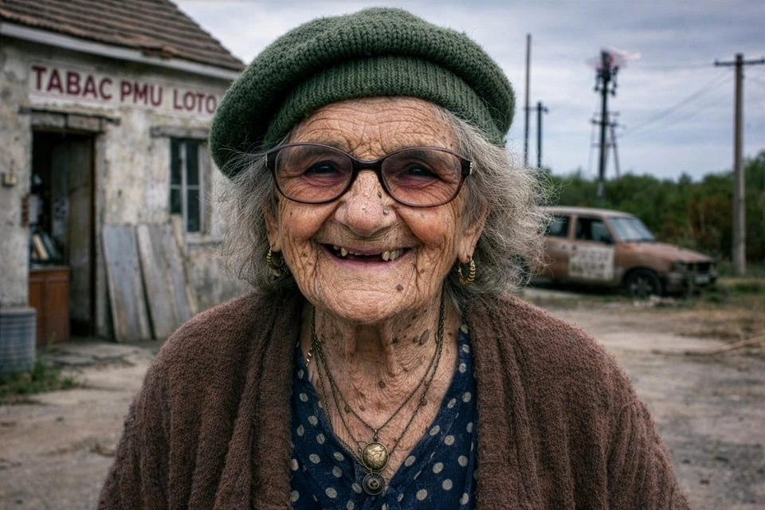
Lire le filmUn sketch qui place un personnage de mamie au centre d’une situation comique, dans l’univers de Groland.
Note de réalisation12Expérimentation · Science-fiction · IA générative16:9
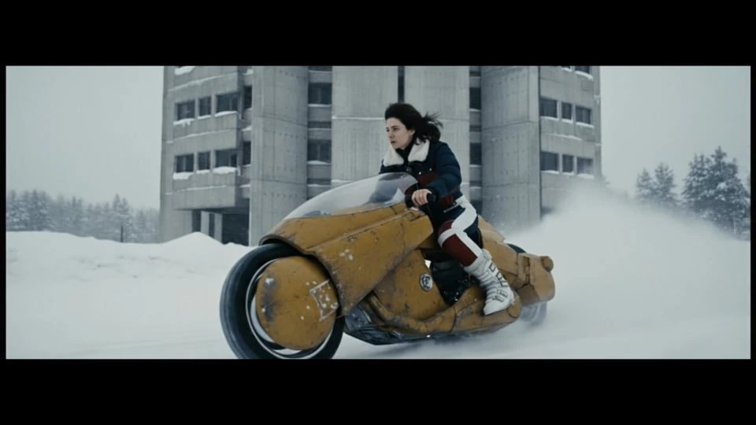
Lire le filmUne recherche visuelle de science-fiction autour d’une moto futuriste et d’un paysage urbain enneigé.
Note de réalisation5 films · 9:16
13Film publicitaire · Boisson · IA générative9:16
Un film publicitaire en format vertical, dans un univers industriel peuplé de personnages masqués, autour de la boisson Truc de Fou.
Note de réalisation14Film · Direction artistique · IA générative9:16
Un univers visuel où l’imaginaire japonais, les cerisiers en fleurs et le longboard se rencontrent.
Note de réalisation15Spec film · Publicité · IA générative9:16
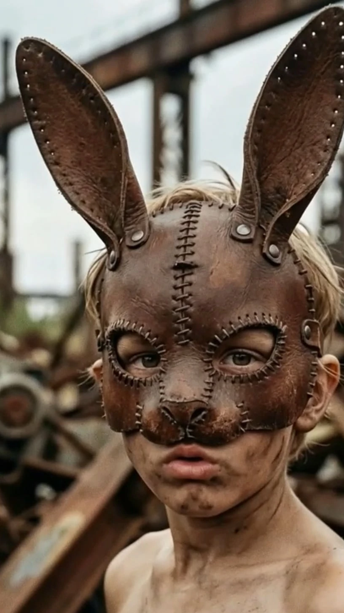
Lire le filmUne proposition publicitaire indépendante, en format vertical, qui associe des personnages masqués à un univers industriel.
Note de réalisation16Sketch · Groland · Canal+9:16
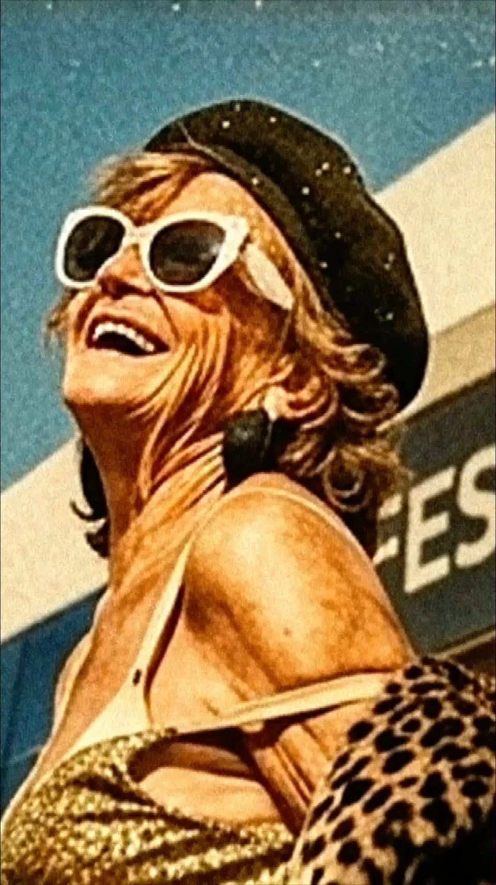
Lire le filmUn sketch de Groland autour de Cannes, qui joue avec les codes du glamour et une figure de mamie décalée.
Note de réalisation17Sketch · Groland · Canal+9:16
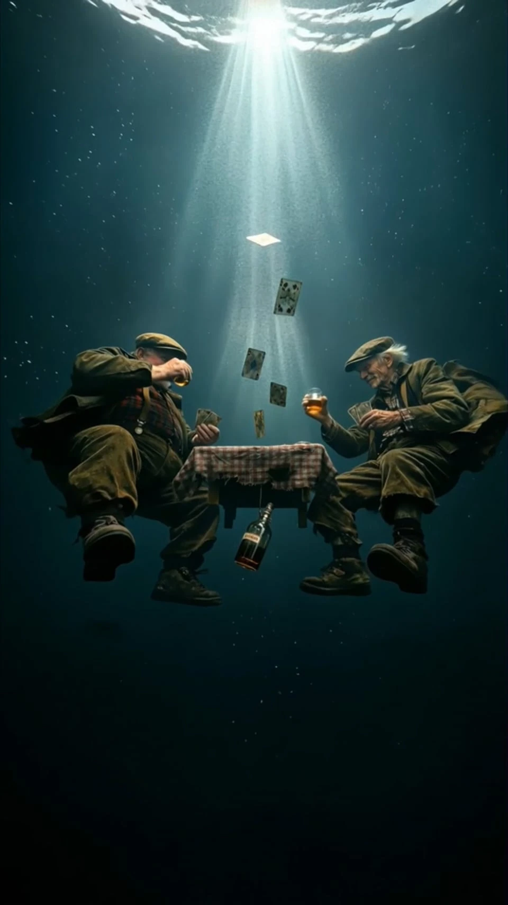
Lire le filmDeux papys jouent aux cartes dans un univers sous-marin : une situation familière déplacée dans un décor impossible.
Note de réalisationLes recherches retenues et les planches de FALLEN.
Consulter les carnetsUn projet, une idée, une rencontre.
Contact